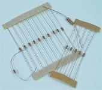
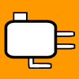
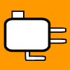

Tools and Other Parts
For safe and proper use, follow the instructions provided for your tools and parts.
Many tools (especially routers and soldering tools) have a bit of a learning curve and take a bit of practice to use well. If you are new to a device (or experienced and wanting to be certain), find inexpensive things (like some scrap wood or extra wires) to test a device or technique before using it on something more expensive or essential. There is no need to practice on the controller itself. The level of precision in using your tools will determine how well your designs come together.
There is an enormous variety of tools and parts that can be used in making a custom controller. I do not intend to cover everything that has a possible use in making a controller. I will try to center on tools and parts that will have a common application.
Some of these tools and parts are more necessary or useful than others in building a custom controller. This section notes the use of each.
Contents
General Safety and Safety Gear and Organization
Fasteners
Screws and Bolts
Nuts and Washers
Corner Braces
Dowels
Glue
Clamps
Tape
Hand Tools
Sandpaper
Screwdriver
Wood Chisel
Pencil / Marker
Brush
Pliers
Wrench
Plastic Cutting Knife
Utility Knife
Measuring Tool / Straight Edge
Hand Saw
Power Tools
Circular Saw
Table Saw
Miter Saw / Chop Saw
Jigsaw / Rotary Saw
Rotary Tool
Band Saw
Sander
Drill
Drill Press
Drill Bits
Router / Laminate Trimmer
Router Table
Router Bits
Planer
Electronics
Wire
Cable/Wire Ties
Wire Mounts
Wire Connects and Terminals
Wire Cutter/Stripper/Crimper
Terminal/Barrier Strip
Jumper Strip
D-Sub/USB Connector
Solder
Soldering Iron
Desoldering Tool
Resistors
Project Box/Enclosure
Multimeter
Miscellaneous
Jigs and Fixtures and Templates
Rubber Feet/Bumpers/Grippers/Pads
Printer
General Safety and Safety Gear and Organization
In all seriousness, the time and effort saved in taking risks is not even vaguely worth the chances of having to try to repair your body. Before using any powerful tool or substance, you should ask yourself how it can possibly affect your eyes, ears, hands, lungs, skin, and perhaps other body parts.
Use the proper safety gear for various devices and materials. Safety glasses or goggles and sometimes gloves should be used with power tools and hazardous chemicals. Ear plugs or muffs should be used with loud objects like routers and even snapping acrylic glass. Masks and respirators and dust collectors (like attached vacuums on some power tools) should be used with dusty cutting (like MDF) and sprays. Everything should be covered when using something generally hazardous like lacquer. And avoid loose clothing and stray long hair.
Image: Safety glasses, ear plugs, mask, and mechanic and rubber gloves
When using power or other dangerous tools, remember that everything centers on the augmenting part of the tool. Make sure any part of your body does not even potentially make contact with it while you make sure the object being processed does make proper contact with it. Rehearse and relax, do not allow the noise or vibration to fluster you, and never rush what does not need to be rushed.
Make sure power tools are unplugged when modifying them (like changing blades or bits). If your hands are feeding and moving toward a blade, something should stop your hands from hitting it if you slip; feed things with accessories like a push stick if your safety will be compromised. Make sure tools are sharp and clean; dull blades can cause dangerously unexpected effects. Be aware of kickback; tools like routers and especially the table saw can throw objects back due to dull blades, improper feeding, or irregularities in materials.
Also, having an organized and comfortable workspace can help in doing precision work and preventing injury. A work bench is good for just this. If you do not have one, try to organize things nicely early on. It will save time, bring better results, and make things much easier on you. A lot of lighting will also be a big help.
Fasteners
Loosely defined, a fastener joins objects together. Various kinds of fasteners can be used in putting various pieces together.
Screws and Bolts
Nails are not recommended for making a controller; spiral edges on screws and bolts hold things together strongly, so mainly use those instead. Screws have a pointed tip that penetrates well, while bolts have a flat tip that takes nuts well. Drill a hole about the size of the inner cylinder (area excluding the spirals) before inserting these fasteners; I recommend making holes for non-securing areas through which the screws or bolts go large enough for the spirals to slide through so that surfaces will be more flush. Screws and bolts are the most simple way to secure things together.
Screws and bolts come in two types that impact how they look on the surface of where they are attached. Some have a non-tapered head that rests on the surface. Others have a tapered head and are meant to sink into the surface. A drill bit with a countersink (or a larger bit with shallow use) can help in installing tapered screws and bolts. Note that non-tapered heads can be sunk too using a flat bit.
Bolts are often rated using the Unified Thread Standard. I recommend using non-tapered bolts sized 8-32 (8 represents diameter and 32 the density of grooves), 10-32, or 12-32 (the largest possible) in mounting joysticks; I prefer 10-sizes for most things and 4-sizes for smaller things. There are also millimeter standards in ISO (International Standard Organization).
Images: Screws, bolts, nuts, and washers; Corner brace
Nuts and Washers
Nuts secure the ends of bolts. These are suggested for securely mounting the joystick to the control panel. Washers can help makes these even more secure and less likely to damage. Washers can also be used in adjusting the height of a joystick. There are also thread/insert nuts that give metal grooves for bolts to screw into surfaces. And there are lock nuts that help hold bolts in place.
Nuts and washers also often use the Unified Thread Standard or ISO too. Make sure their numbers match the numbers for the bolts (washers do not need or use a groove density rating).
Corner Braces
A corner brace is an L-shaped plate with holes for securing corner areas together.
Dowels
Dowels are solid cylinders usually made of wood, plastic, or metal used in interlocking two pieces with snug holes drilled for each end. They and the meeting pieces are usually all glued together. Their main advantage is leaving no sign of their use in the final product (like a screw hole). Dowel plugs can be used to smooth and hide holes (even for screws).
Precision is essential in using dowels. Measuring and marking placements and making holes with a handheld drill alone will often have disappointing results. A jig or some dowel centers and a drill with an accurate level guide are needed for good hidden joints; a drill press does the work even better. Use dowel joints sparingly as many of them can work against each other in bringing things together.
Images: Dowels and dowel centers; Glues; Clamps
Glue
Glue (which does not entirely fit the definition of a fastener) will help in permanently securing pieces together. It should cover all portions of the areas coming together. Unless large surfaces are being glued together, it should be used in conjunction with interlocking produced using dowels or shaping that increases surface area. Glue can turn multiple pieces into a larger block (and often already has in the wood you purchase). Glue can also be used to make PCB solder connections stronger.
Wood and glue make for connections stronger than you might think; two surfaces covered with glue and joined together make a very strong connection (often the wood gives out before the glue does). Wood glue and some other glues like resin (which actually comes from trees) are good for bringing wood together. Clamps and/or weights should be used for drying to make stronger, more seamless bonds. Take steps to make sure different pieces fit together well before and while gluing because, when it dries, it is permanent.
Excess glue (which is usually a product of using an adequate amount of glue) can be messy. Wiping it away with a dry cloth can rub it into the surface and should not be done. Wiping it away with a damp cloth is fine if the wood is not affected by water (like softwood is). Using a chisel or sandpaper can help get rid of it after it dries. It is often best to use masking tape around joints before gluing to prevent much of the problem in the first place. I like to scrape glue away before it dries using a butterknife I often wipe into a towel.
Glue can make a more sleek design than screws, but tends to be a bit more difficult in building, and can make the controller less modifiable. Note that there are different glues designed for other materials like acrylic too.
Clamps
Clamps (also called cramps) can be considered both fasteners and hand tools. They act as extra strong hands that hold things in a certain position and come in a large variety.
In addition to helping glue, they can hold many objects in place to make working them easier, safer, and more exact. In some circumstances, a piece can go out of control when it is not secured using clamps. They can also attach other objects to use as guides in working on different pieces (ie help make jigs and fixtures). Clamps may be more useful or essential than you think.
Use some padding like cardboard or scrap wood on clamping points to prevent unwanted divots or other damage.

Image: Masking and double-sided tape
Tape
A couple different forms of tape can be a huge help.
Masking tape masks surfaces from things like glue, finish, and abrasives. It makes cleaning glue easier. It protects areas to which you do no want to add a finish; it can make patterns when painting. And it can protect completed spots from sanding and sawing. Plus it can be used to make labels.
Double-sided (double-stick) tape has adhesive on both sides of the tape. It is great for attaching templates and assuring things stay in desired locations. You can imagine double-sided tape as a kind of clamp. You may be surprised how strong it can be, and learn that not much is usually needed. Once you start using it, you may wonder how you ever went without it, and why it is not a more common product.
Hand Tools
Unlike power tools, hand tools are powered by hand.
The most commonly recommended hand tools for making a controller, in no specific order, include sandpaper (and a sanding block), screwdrivers (a smaller phillips, a medium phillips, and a smaller slotted), clamps (of various sizes for various needs), needle-nose pliers (medium size), and a pencil and a measuring tool (like a quality ruler).
Sandpaper
Sandpaper smooths pieces and finishes, helps in refining the dimensions of cuts, and can be used for slow general shaping like contouring. Start with heavier grit for bulk shaving, then use fine grit for a smooth finish. Sand with the grain of the wood to prevent scratching. In finishes, it is used between and after coats for extra smoothness and shine; you may want to wet the paper in finishing to rinse away sticky substances.
Sandpaper comes in various grades, the higher the number, the finer the sanding. Use 40-120 grit in early smoothing and shaping (a lower number in more substantial shaping), and 150-320 grit in smoothing and finishing (350+ for more serious finishing).
To make even and strong sanding, the back of the paper should cover something hard and flat (like some scrap wood or a sanding block); sanding with the paper on something solid is much faster and more even than going by hand. A power sander (which comes in a few varieties) can speed up the process substantially, but is not necessary. Do not rely on sanding for substantial resizing of pieces; exact cutting from other tools is usually needed for this.
For more powerful hand grinding, look into files, rasps, and scrapers.
Images: Sandpaper and a sanding block; Screwdrivers
Screwdriver
A screwdriver inserts and removes screws and bolts. They come in different sizes and shapes. The two main shapes for making and modifying a controller are slotted (flathead) and phillips (plus-shaped).
In addition to putting the controller panel and box together, you may need one for extracting a PCB or using a terminal strip. Screwdrivers help modify joysticks as well (like in opening housing and removing an e-ring); they also help secure tops to Sanwa and Seimitsu joysticks. They also often modify other tools, especially power tools. Some drill bits can substitute for screwdrivers. Lefty loosy (counter-clockwise), righty tighty (clockwise).
Wood Chisel
A wood chisel is a thick, sharpened blade used in direct, simple cutting of wood. It can be used in tweaking dimensions, decorating, removing excess glue, and squaring curved corners left by routers. Chisels are made very sturdy and sharp; be very careful when handling one.
Pencil / Marker
A pencil or marker can mark where cuts are being made as well as label notes; note and cutting marks can make working pieces much easier.
Brush
A brush spreads things like paint, oil, stain, varnish, and glue that does not come in a spray. Make sure the brush is meant for use with whatever substance it is spreading.


Images: Wood chisel; Pencil and marker; Brush; Pliers; Wrench; Plastic cutting knife
Pliers
Pliers are used to put a strong pinch and leverage on things. Different kinds are used for removing and replacing joystick retaining clips. They quite possibly will not be necessary in making a joystick controller, but some events, like some working with wires or tightening nuts and bolts, may come along.
Wrench
A wrench generally secures or removes nuts and bolts. Might need one or some pliers for mounting the joystick.
Plastic Cutting Knife
A plastic cutting knife helps in cutting acrylic glass. It should be used in conjunction with a metal straight edge.
Utility Knife
A utility knife holds a shaped razor blade. They are good for cutting paper for the background or separating solder connections on a PCB.
Measuring Tool / Straight Edge
Measuring objects will be necessary in getting the right proportions. A straight edge will help draw straight lines; a sturdy one can help in cutting acrylic glass.
Some enhanced measuring devices include the framing square and combination square. A framing square (also called a carpenter square) is an L-shaped ruler used for placing things at right angles. A combination square is a ruler with a sliding and locking right and 45-degree angle piece.
Images: Utility knives; Measuring tape and combination square; Hand saw
Hand Saw
A saw will cut pieces to the proper dimensions and comes in many varieties. Measure twice, cut once. Cutting a slight excess (that can be sanded away) is better than cutting short.
Hand saws are the most simple form of saws; they basically have a blade attached to a handle. Examples include wood saws and hack saws. Hand saws often take many times longer to use than power saws, and tend to be less accurate, but are substantial less expensive. Using a makeshift jig can help a lot. If the blade starts getting stuck as you saw, it probably means that the piece being cut is bending in on the blade and needs more support.
Power Tools
A power tool has a motor to give it extra strength.
The three most commonly recommended power tools in making controllers, in no specific order, are the table saw, the drill press, and the router. The table saw is best for quickly and accurately cutting boards to the proper proportions. The drill press is best for adding precise holes for buttons and fasteners. The router is best for mounting joysticks and contouring edges. These three power tools will cover most power tool needs, but substitutes (to various extents) can be found. Note that each of these tools (partially excluding the router) is attached to some form of a table.
Circular Saw
A circular saw is a spinning disc of blades or other abrasives that are very effective and powerful at cutting lines. Various discs for cutting various materials in various ways are available. The circular saw is probably the most dangerous tool in woodworking, so strong safety should be noted.
Image: Circular saw
Table Saw
A table saw is a circular saw built into a slot in a table that effectively cuts pieces to the proper dimensions; it is the most fundamental tool of modern woodworking for its ability to do quick, accurate, and substantial shaping. Safety must be very strongly noted when using a table saw. Use the blade guard, anti-kickback pawls, and riving knife, especially if you are new to table saws. If a piece binds, let go, back away, and turn off the saw.
Table saws center on straight cuts. Pieces must be fed as straight as possible to prevent them from binding on the saw blade, the most noted side effect being kickback. Kickback throws the piece back since the blade moves in that direction. But kickback is just one of many problems from not feeding pieces straight, including jamming, uneven and crooked cuts, scuffmarks, and burning. To ensure quality and safe straight cuts, the rip fence and miter slot need to be aligned parallel to the blade. You will likely need a framing square and/or combination square for setting your saw properly. Pieces fed into a table saw should always be held against either the rip fence or the miter path, and never both.
Image: Using a square to set the blade and fence and miter parallel
The rip fence is used for making long cuts of a uniform width, ie rip cuts. Rip cuts can be the most trying on a table saw; this is where parallel and smooth feeding are the most difficult. Make sure large panels are supported everywhere when ripping them. I suggest cutting large panels down to size before running them in a cheap and/or small table saw using either a safer saw or having them cut at the store from which you purchase them. Always use a push stick for thin rip cuts. Do not push the piece directly into the side of the saw blade when doing rip cuts.
A miter slot is a groove that runs through the table parallel to the blade slot. They are most commonly used for the miter gauge which is used to make cross and miter cuts. A cross cut is a 90 degree short cut while a miter cut is short and angled. Note that rip cuts are often preferred for longer cuts because setting the miter for a precise uniform width can be difficult. To square the miter gauge, run a framing square against it and the blade or fence. But miter slots can also be used for some of the best jigs, including the sled. Sleds are easy to build as they are just a panel with a tred(s) attached to the bottom to run most the way through the saw blade; a board is usually attached on top of the sled at 90 degrees (cross cut sled) or an angle (miter cut sled). Sleds can be made to run through the miter slot or along the rip fence. Sleds in table saws can do many cuts very nicely, can prevent chipout, and are the best tools for making precision miter joints.
In most table saws, the saw blade can be slanted so objects can be cut at an angle using a bevel gauge. A table saw can also be used to cut dado grooves like those used in some joints. Circular saw blades with more and/or thinner teeth are used for smoother, shorter cuts (like cross cuts and acrylic), while fewer and/or thicker teeth are used for more power (like rip cuts). The need for a table saw can be avoided using pre-cut materials or other cutting tools, but it is the most effective of the saws.
Miter Saw / Chop Saw
A miter saw (chop saw is very similar) is a precision, suspended, levered circular saw that plunges to cut. It is best for cutting thin long boards to specific lengths at specific angles, usually 45 or 90 degrees. In regards to building a controller, a table saw can do everything a miter saw can, and do it better. Do not rely on a miter saw for cutting panels.
Another version of the anchored circular saw is the radial arm saw. It suspends on a straight track and can do long cuts nicely, but it also is not as versatile as the table saw.
Images: Miter saw; Jigsaw; Rotary saw
Jigsaw / Rotary Saw
A jigsaw has a fast-pivoting (reciprocating) saw blade and is good for cutting shapes and holes. A rotary saw is a spinning cutter that makes more precise shapes holes. They are not as good as using a table saw or router in controller building, but they are an option in cutting boards and mounting the joystick and strengthening the control panel.
Rotary Tool
A rotary tool is a miniature mixture between a rotary saw, a router, and a drill. The best-known version is Dremel. With many different bits, this tool can be used for smaller work, but often cannot substitute for much of the work of larger tools. A rotary tool can come in handy for smaller carving, drilling, and buffing, especially on the PCB.
Band Saw
A band saw is a long blade that flexes sideways and forms a hoop; in a machine, it is looped around a wheel above and a wheel below the cutting area. It is another fundamental tool in woodworking, but is definitely not necessary in making a controller. It cuts perpendicular to the piece placed flat on its stand (which can be slanted). Its main use is in freehand work, especially curved cutting. Since the ends are connected, it cannot cut holes. It can function like a table saw, but needs a good fence and miter slot which most do not have.
Images: Dremel tool; Sander
Sander
A sander adds power to sandpaper by vibrating, spinning, conveying, and/or oscillating it. It is faster, but can be less exact than simple hand sanding. If you have tools that cut things precisely and in various ways, a sander will be unnecessary. Power stablized sanders can do a fairly exact job in substantial shaping.
Drill
A drill will be essential in building your controller. It should be used for making holes before entering screws or bolts to prevent warping of pieces and make it easier. The drill is necessary for making the holes in the control panel for the buttons. A drill can also be used for making holes in which to insert dowels to hold boards together. It can help in soldering wire to a PCB (using a thin, strong drill bit). And it can be used to make a hole through which to run the cord.
I recommend spending a moderate amount more to get a drill press over a handheld drill. If you do not want a drill press, I recommend getting one with leveling indicators to help in making better perpendicular holes; you can also run the drill along a square piece of scrap wood to ensure perpendicular entry. Plus, when using a handheld drill, I recommend making divots (like with a hammer and small nail) first to help guide the drill into the exact location. You can use tape on the drill bit to ensure drilling the proper depth.
Image: Handheld drill
Drill Press
The bigger, stronger, more accurate version of a drill is the drill press. It ensures an accurate angle of entry and can go through stronger materials. It has a table (which can often be angled) to which objects can be clamped, and often should be; it is very possible for the drill bit to bind in the piece and send it spinning rapidly, and unclamped items can vibrate causing rippled cuts or can push causing crooked cuts. The drill press can be regarded as a "table drill". A handheld drill cannot substitute for the strength, ease, and precision of a drill press.
One of the main problems for drill presses is dust. When dust is not flowing out of cuts, it can create a great deal of friction. This friction can be hard on the drill press, drill bit, and piece being cut. If not handled properly, dust can cause burning, drill press wear (especially in the belt), and a stuck drill bit that may never come out. To counter dust, use bits that disperse it well (like brad-point, spade, and forstner bits in wood), and pivot in and out of drill cuts so the dust gets shed, and clean the bit when it gets buildup; if you smell or see smoke, it is a sure sign of the need to pull out. I especially do not recommend using hole saws for cuts more than 6mm deep in a drill press.
The more friction and/or sensitivity in the piece being cut with a given bit, the slower the drill press should be set; smaller holes in durable materials should use higher speeds, while larger holes in fragile materials should use slower speeds. Be sure to tighten all three bit securers when changing bits. Support the bottom of the cut with scrap wood to prevent blow out; this is especially necessary for larger hole cuts.
Drill presses can be set to drill at a specific depth so that equal cuts can be made. A drill press with a forstner bit can be utilized like a router to a limited extent.
Drill Bits
Drill bits come in a large variety. Some are just simple cylinders with spirals, while others are more elaborate so larger holes can be made without making overly large and heavy bits. They all have a central point at the tip to guide them through. A pilot is a small hole made to guide the central tip of subsequent larger bits and objects; pilot holes can help in accuracy and ease with strong guidance in making larger holes; pilot holes can be especially useful in making large button and joystick holes in panels.
Twist bit: Twist bits are the most simple and common drill bits. They are pointed metal cylinders with sharp spiral grooves along the cylinder; they are best for cutting thinner holes in non-wood and non-glass materials. Cobalt versions are best for metal. Smaller ones (which are often called micro- and mini-bits) are great for PCB work.
Brad-point bit: Brad-point bits are ideal for drilling smaller holes in wood; they are like twist bits, but they have spurs at the tip to add more cutting along the radius, and they usually have spirals of alternating thickness that is better for funneling sawdust. Brad-point bits should not be used on metal. Having a good assortment of twist and brad-point bits will ensure quality pilot holes and fittings for screws and cords.
Glass and diamond grinding bits: Glass bits are simple V-shaped bits without spiral grooves. Diamond grinding bits have a strongly textured tip. Since spirals pull on materials, they tend to be inappropriate for working on glass and acrylic. These bits will not pull at acrylic.
Spiral and saw bits: Spiral bits do not have blunt sides like most other drill bits have. Because of this they can move sideways through materials. These bits are used in rotary saws. Saw bits tend to have more spiky sides for doing similar work.
Countersink bit: Countersink bits make uniform cone-shaped divots in which the heads on countersunk screws and bolts fit so they do not protrude on the surface. Using a larger bit can somewhat substitute in making these divots, but countersinks do a much better job. They especially help in making metal panels and mounting plate faces flush. Countersinks are rated for different materials; try to get one that is rated for metal.
Image: Drill bits left to right: mini-twist, cobalt twist, brad-point, glass, diamond grinding, spiral, countersink, step, spade, spade (spurred), hole saw, forstner, forstner (spurred)
Spade bit: The spade bit is the most simple drill hole bit. It is a flat bit with perpendicular blades of the needed diameter and a guiding pointed tip. Like twist versus brad-point bits, spade bits can come with or without spurs at the radius. Spurs can be more efficent in cutting wood and acrylic. Spade bits should not be used on most metals.
Hole saw: The hole saw is a twist bit attached to a hollow cylinder of saw teeth using an arbor mandrel. Hole saws often come with a few teeth that stick out farther than the desired radius; lightly hammer these teeth straight to cut an accurate radius. (A hole saw with a size slightly smaller than the needed size can possibly substitute for a larger size with some teeth sticking out.) Hole saws are the strongest and most durable hole bit. They are the best for going through metal, and are good for going through thinner acrylic, but tend not to do well in wood due to the buildup of sawdust on the teeth. If you use one on wood, clean it constantly.
Forstner bit: A hybrid between the spade bit and the hole saw is the forstner bit. It has a tip that branches using blade lines to a radius lined with spaced teeth and gaps that funnel wood and dust away. They can have teeth along the radius that stick out farther and act like spurs; if you want more flat cuts, avoid forstner bits with teeth that stick out farther than the blade filling the diameter. They are designed for cutting wood and should not be used on metal.
Step bit: Another larger hole bit is the step bit. It is a stepped cone of increasing sizes. The goal in the design of this bit is to enable holes of rough sizes to be made quickly and easily. It can cut a variety materials, but should not be used on thicker metal. These work best on thin pieces as they will not make a uniform hole through thick pieces.
30mm hole bits are used for making holes for standard Sanwa and Seimitsu buttons, 24mm hole bits usually for Sanwa and Seimitsu joysticks, and 1-1/8" hole bits for Happ/IL buttons and joysticks. But a slightly smaller (sometimes bigger) hole can also often work in making these holes.
Keep in mind you can also use router bits in a drill, but this can be dangerous as more blades can be exposed.
Router / Laminate Trimmer
The router is a powerful, precision, spinning carver nearly required for very high quality controller builds. (A laminate trimmer is a smaller, weaker version.) It carves coves in areas for more precise mounting of joysticks and buttons, it makes more interlocking options available, it adds designs along edges, and it can be used generally for much more elaborate quality designing in your controller. Routers are often inexpensive, but the needed bits can cost a lot. Routers work well on wood and acrylic, but are not used on metal.
They come in two types: A plunging router allows the cutting bit to move quickly in and out of cuts, while a fixed-base router does not have this feature. Plunging routers are better for free working, while fixed-based routers are better for router tables. Plunging routers can imitate a drill press in some respects. Some routers have multiple bases and are both fixed and plunging.
A router can assist in shaping pieces in many ways for many functions. Using a table, a jig, and/or certain bits, it can substitute for different saws to a limited extent. A router has nowhere near the power of many saws, so you have to understand how pieces can take blunt hits from it and make sure to accommodate them.
Some simple tips in using a router:
- Practice makes perfect; get some scrap wood and practice what you are going to do before trying it on something more substantial.
- Feed at a moderate speed to prevent rippled cuts or burning.
- Put a scrap piece of wood against back ends of cuts to prevent blow out.
- When possible, transitionally route out smaller areas a bit at a time instead of a large area all at once to make smoother, easier cuts.
Images: Router; Router table; Transitional router cutting
Router Table
A router can be attached and fed through a hole in a table to help carve smooth, straight lines and make feeding a router easier and safer. It expands on the cuts and designs capable from a router. Use extensions like a piece of scrap wood or push stick when feeding small pieces on a table.
A router table with a straight bit can kind of function like a table or band saw, but usually not as well. Keep in mind, standard router bit blades are only up to about 1-1/4" (30mm) long (some standard ones are 2-1/2"/60mm) and move much more slowly through pieces than a power saw. To make a router function like a saw, quality tools and jigs are needed.
Router Bits
Router bits have blades or spirals that spin and do the cutting. There is a wide variety of router bits in many sizes. Special router bits make specialized shaping like roundover, chamfer, rabbeting, and dovetail possible. Store them safely so they do not bump and cause one another damage. The two most useful bits in controller building are a thin straight bit with a trimming wheel on the shank for general shaping and templating (often called a pattern bit), and a chamfer bit for general contouring and fitting; a trimming straight bit with the wheel on the tip is also useful.
The shank on a router bit is column that inserts and gets held in the router. Most router bits have shanks in one of two diameters, about 1/4" or 1/2" (6mm or 12mm). If your router can use both, 1/2" shanks tend to be preferred because they give the spinning blades more momentum and strength.
Images: Random router bits; Main variety of router bit shapes
Many router bits have ball-bearing wheels attached as guides. The router will rest level on top of the piece while the wheel on the bit will make contact with the side, and the blade on the bit shapes the area along the edge. This makes a router table not necessary for contouring edges (though tables make it much easier). Changing the size of the ball-bearings on a bit can change its type too (like, using a bigger wheel, a beading can become a roundover).
Trimming bits can come in very handy; they are straight bits with a bearing wheel at the top and/or bottom of the blades. Their main use is in templating. Templating involves taking a shaped piece, attaching it to another piece, and running the wheel on the bit along the shape, thereby giving the other piece the same shape. This can be used to cut boards to the proper length by attaching one board at the desired length to the other board. This can also be used in making precise mounting slots, cutting acrylic to the same size as the base panel, and shaping the controller box.
Planer
A planer shaves surfaces flat. They come both as hand tools and power tools. The power tool version is much faster and exact. It can come in useful for flattening panels and other surfaces, evening boxes, and adding slants to boxes. The jointer is an upside-down version of the planer. A router can function like a planer using jigs and fixtures.
Electronics
These tools and parts are used in building and organizing the electronics in a controller. Wire and some kind of cutter and stripper will be necessary, but what else is needed will depend on the type of PCB being used and the preferences of the builder.
Wire
Wire links devices like joysticks and buttons to the PCB. Usually wire described as "hook-up" is used for PCB work. They have standardized thicknesses in AWG ratings; the higher the AWG, the thinner the wire. Insulated 22-26 AWG wire is best for controller building.
Wire comes either stranded or solid; stranded wire is made up of thinner strands of wire (like string) while solid is one solid strand. Which to use can be a matter of preference. Stranded wire is much more flexible making it easier to twist and less likely to break a solder point, but can fray and fall in the way. Solid wire is more rigid and has attributes opposite to the ones noted for stranded wire.
Images: Wire; Cable ties; Wire mounts
Cable/Wire Ties
Cable ties are fasteners used as cheap handcuffs by some officers, but here they will help bind and organize wires.
Wire Mounts
Wire mounts are also fasteners used for organization and attach to a surface, usually holding down ties, clipping onto wires, or looping around wires.
Wire Connects and Terminals
Wire connects and terminals will make connections between wires and terminals more secure and easy and less permanent. They come in varieties like quick disconnects that hold on terminals, butt connectors that link wires together, and spade (fork) and ring terminals that hold under screws. The metal faces share conductivity with the attached wire(s). They generally use crimping tools to attach to wires, but can also be attached using solder. Many of them are color-coded: red is 18-22 AWG, blue is 14-16 AWG, yellow is 10-12 AWG or 24-26 AWG.
Images: Terminals left to right: female quick disconnect, butt connector, spade (fork) terminal, ring terminal; Wire cutter/strippers
Wire Cutter/Stripper/Crimper
The wire cutter cuts the wire to the desired length, the stripper exposes the end of an insulated wire, and the crimper secures connects to wires. One tool with all these features (which is a form of pliers) can cover most wiring needs. Cutters/strippers tend to do their job a lot better than ones that include crimping. An exacto knife or razor blade can do some of this work too.
Another version of pliers are diagonal cutters. They have blades that can cut very near a surface, which is good for cutting stray wires or other objects from a PCB.
Terminal/Barrier Strip
A terminal or barrier strip (also called a block) helps organize, secure, and duplicate or converge various signals from various wires. It uses screws to hold down wire ends (European-style) or spade or ring terminals (standard/American). Multiple wires can be attached to single slots; this can duplicate a ground or a signal for multiple PCBs, or even take in signals from different devices using the same PCB or command.
Images: Terminal/barrier strips: European-style (white), standard (black); Jumper strip; 9-Pin D-sub female and male connectors and hood
Jumper Strip
A jumper strip distributes a single signal to multiple terminals. It uses screws to hold down spade or ring terminals. Jumpers can often be attached to barrier strips. This can be used for the ground signal, but connecting multiple wires to the same slot will work just as well.
D-Sub/USB Connector
A D-sub (D-subminiature) or USB connector attaches to the wires in a cord and gives it plugging capabilities. It can be used to give a controller cord and/or PCB independence. D-sub connectors commonly come in 9-, 15-, and 25-pin versions with hoods available to cover them. USB connectors/mounts have four or five wire locations and are much smaller. They come in soldering or crimping versions.
Solder
Solder is metal that melts at low temperatures and is used to join metal surfaces. It connects wires to an extracted PCB, wires to device switch terminals, and wires to wires. Use rosin-core solder that comes in a very thin form to avoid adding too much. Rosin is a form of flux, which can be purchased in a paste or liquid separately; you maybe prefer using solder without flux and adding your own flux. Lead-free solder does not shine.

Images: Solder; Soldering iron; Desoldering tools
Soldering Iron
A soldering iron melts solder in joining metal surfaces. In working with a PCB, use one with a thin tip and about 15-25 watts (up to 40 will also work, but can be a bit excessive). Do not use a flash/cold soldering tool which uses an electric charge that can kill a PCB, and often has poor performance. Be organized when soldering to avoid risky, awkward grips; getting a soldering station can help a lot. You may want to find a thin pair of gloves to avoid getting burned.
Desoldering Tool
A desoldering tool helps remove solder and comes in a few forms. It might be needed in changing a connected wire or fixing mistakes, and will be necessary in removing analog sticks. Centering the pump form on the tip of the submerged soldering iron is an effective way to use it. But pumps are not as effective as braid. Disposable desoldering braid is cord of thin copper strands that mop up solder. Simple flicking away of solder can work too. You may need flux paste to prevent ruining the metal during desoldering.
Resistors
A resistor is an electronics component that lowers voltage and current. Resistors can help in removing bulky analog sticks, triggers, and membrane faces from PCBs. They are rated by resistance and wattage. Useful resistances for PCBs range usually between 1K and 10K ohms. The smaller 1/8 and 1/6 Watt resistors (physically about the same size) are fine.

Images: Resistors; Project box; Multimeter
Project Box/Enclosure
A project box works as housing to secure and protect the PCB inside or outside your controller. It contains holes to which a PCB can be secured if it modified to fit those holes. In a sense most electronic devices are held in a type of project box.
Multimeter
A multimeter measures multiple electronic attributes like current, voltage, and resistance. It can help in testing the properties of various electronic components and whether or not circuits are connected. A digital multimeter is much easier to use than an analog one.
Miscellaneous
Jigs and Fixtures and Templates
A jig or fixture is any device used to control the movement or location of materials in relation to a tool. Some examples include tables, miter slots, rip fences, featherboards, stop blocks, miter sleds, dowel kits, sanding blocks, straight edges, and wheels on router bits.
There is no definitive example of a jig or fixture; they can be created and used in many ways. Clamps (or tape) and precisely cut wood are some of the more essential objects in making jigs. A sloped block of wood can work as a jig in helping to cut at a certain angle. A clamped board on one or both sides of, or even above, a cutter works to guide and secure pieces being slid through the blades. A groove in a table can work as a guiding track. Precision holes made in a block can work to guide drilling. The implementations of jigs are practically limitless.
The stop block is a fixture deserving special mention. When a block is clamped to a fence or rail or other spot, it can work as a stopping point that ensures multiple cuts are made at precisely the same distance.
A template lays out a specific design. Templates can be used to make exact shapes for drilling, routing, shaping, sawing, etc. Example templates include mounting plate, joystick and button, panel, box shaping, and box clamping templates. Mass production shops often have tons of templates around.
When you see some elaborate design and wonder how it was done, some creative jig, fixture, and/or template is often involved.
Images: Jigs and fixtures; Rubber feet
Rubber Feet/Bumpers/Grippers/Pads
Pretty much every electronic product meant to rest on a flat surface has rubber pieces to prevent them from sliding around or scraping the surface. Add these to the bottom of the controller to keep it stable in use. Avoid similar looking products that go by "gliders" or "sliders" or "slippers" or "felt pads". Make sure to attach them near the side of the controller so they do not function as pivots.
Printer
A printer can print images for the background in a controller; use thicker, durable or adhesive paper for this. It can also print layouts to help in drilling.
 
